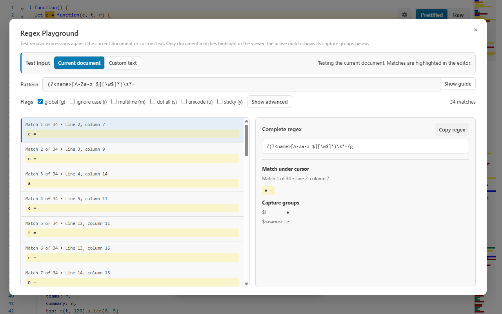
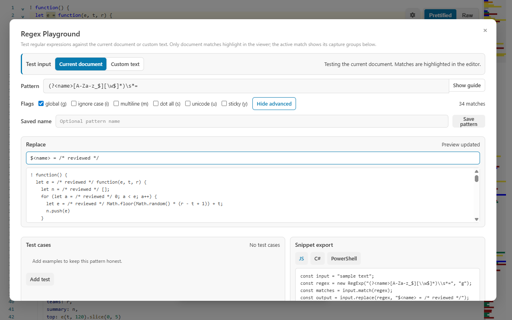

Choose the test input
Use the open document so matches highlight in context, or switch to custom text that remains only in the active session.
Open Regex Playground from the current document, enter a pattern, and see every match highlighted in the viewer. Inspect numbered and named groups, preview replacements, keep test cases, and copy a working snippet for JavaScript, C#, or PowerShell.

A match count is useful, but a reliable pattern needs context, capture-group inspection, negative cases, and a replacement or code path you can verify.
Use the open document so matches highlight in context, or switch to custom text that remains only in the active session.
Enable flags, move through the result list, and review complete matches, numbered groups, and named groups.
Preview a replacement, add pass/fail test cases, save the pattern, and copy a language-specific snippet.
A named group makes the result self-describing and gives the replacement preview a stable reference.
The global flag finds every assignment-like occurrence in the current document.
(?<name>[A-Za-z_$][\w$]*)\s*=Clicking a result connects the list, details panel, and source highlight.
Match 3 of 12 • Line 1, column 5
services =
Capture groups:
$1 services
$<name> servicesThis lesson starts with a small environment-style document, captures the key and value separately, previews a replacement, and records tests that protect the pattern from future edits.
Open Regex Playground with Ctrl+Alt+R or from General tools, then choose Custom text. Custom text remains in the active session and is useful while you learn because unrelated document content cannot create surprise matches.
API_URL=https://api.example.com
TIMEOUT_MS=5000
DEBUG=true
not an assignmentEnter ^[A-Z][A-Z0-9_]*=.*$ without surrounding slash characters. Enable multiline m so ^ and $ apply to each line, then enable global g so your replacement preview, the copied /pattern/flags expression, and the JavaScript snippet act on all three assignments instead of only the first. (The live result list always shows every occurrence, even without g.)
Change the pattern to ^(?<key>[A-Z][A-Z0-9_]*)=(?<value>.*)$. Select a match and verify that the details show the complete line plus named groups key and value. Named groups make later replacement text and generated snippets easier to understand.
Move through the three result rows. Confirm that not an assignment is excluded and that the value group may contain punctuation such as :, /, and periods. When using Current document, selecting a result also jumps to its highlighted source location.
Open Advanced and enter "$<key>": "$<value>" as the replacement. The preview should turn each assignment into a JSON-like property line. Replacement is a preview only; it does not mutate the document or custom text.
Add a match assertion for PORT=8080, a no-match assertion for lowercase=value, and a count-equals assertion of three for the complete sample. If you depend on the exact replacement, add a replacement-equals test as well.
Review the displayed /pattern/gm form, save the pattern with a meaningful name, and copy JavaScript, C#, or PowerShell output. Generated code is a handoff: run it against the same positive and negative cases in the destination runtime before shipping it.
Try each change separately and watch the live results and tests. Restore the pattern when a negative case begins to match.
# and prove it does not match.g still governs the copied expression and the JavaScript snippet.Advanced mode keeps replacement output, test cases, and snippet export in the same workspace as the live matches.

Add short examples for the ordinary values the pattern must accept. Keep each case focused so a future failure tells you which boundary changed instead of merely reporting that one large sample no longer matches.
Test empty values, punctuation, whitespace, line breaks, Unicode, and the start or end of the input when they matter. These are where a broad character class or a misplaced anchor usually becomes visible.
Include believable text that must not match, not only obviously unrelated strings. A passing positive case proves the pattern can find something; a passing negative case helps prove that it finds the right thing.
Flags change the meaning or traversal of the expression. Enable each one for a reason you can explain rather than copying a familiar bundle of letters.
| Flag | Use it when | Common surprise |
|---|---|---|
g global | The replacement, copied expression, or generated code must process every occurrence. | In the replacement preview and the exported JavaScript snippet, omitting g processes only the first occurrence — even though the playground’s match list always shows every one. |
i ignore case | Letter case is not meaningful in the source. | It can accept values that a case-sensitive identifier or protocol should reject. |
m multiline | ^ and $ should refer to each line. | It does not make the dot character cross line breaks. |
s dot all | A dot should include newline characters inside a multi-line value. | A broad .* can consume much more text than intended. |
u Unicode | The pattern uses Unicode-aware escapes or must treat code points correctly. | Some older runtimes or copied snippets may support a different feature set. |
y sticky | Matching must begin exactly at the current engine position. | It is useful for tokenizers but surprising for ordinary document search. |
Check input source, case, anchors, and flags. Test a smaller literal fragment, then rebuild the boundary rules around a known match.
Inspect greedy quantifiers such as .*. Use a narrower character class, a reluctant quantifier, or a clear delimiter when the input has one.
That is intentional. Replacement is a preview. Copy the result only after its test cases and visible output are correct.
Simplify nested repetition and ambiguous alternatives. Patterns run in a worker, stop after roughly 1.5 seconds, and cap results at 500 so a catastrophic expression cannot freeze the viewer.
Learning outcome: you should be able to explain the input, boundaries, groups, flags, positive cases, negative cases, and replacement behavior of a pattern before copying it into code.
gim$1$<name>RegExpRegex[regex]::new with Matches/ReplaceIt is not written to pattern history, settings, or extension storage. Saved patterns and test definitions are stored locally and may be sensitive if you include private examples in them.
No. Replacement is a preview. Copy the result when you are satisfied with it.
Yes. Switch the input to Custom text. That text stays only in the active viewer session.
A live match proves the pattern works for today’s sample. Positive and negative test cases help show that it still behaves correctly after the pattern changes.
The pattern is evaluated by the installed runtime. Feature support therefore follows the browser or WebView2 JavaScript engine in use.
Open Regex Playground from the document, inspect the matches in context, and leave with a replacement or snippet you have actually checked.